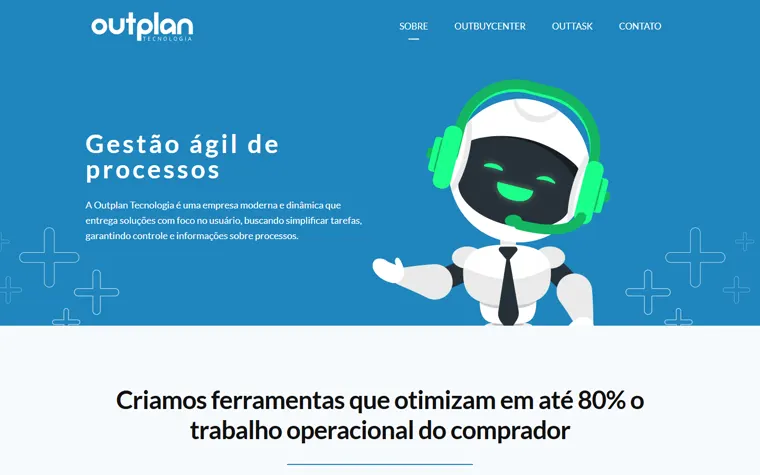
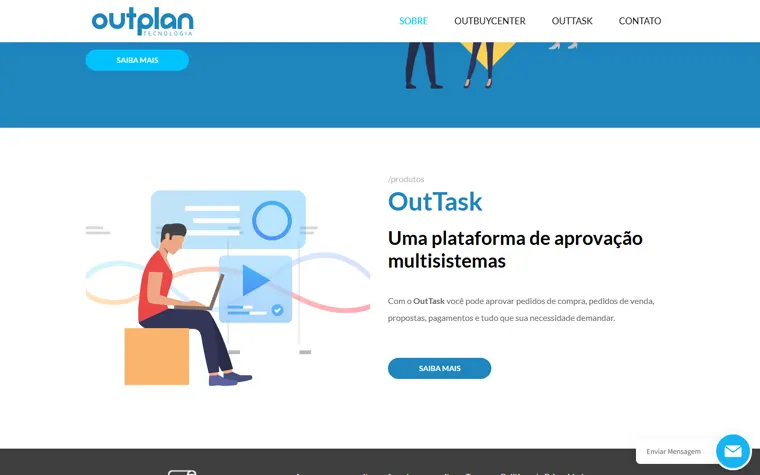
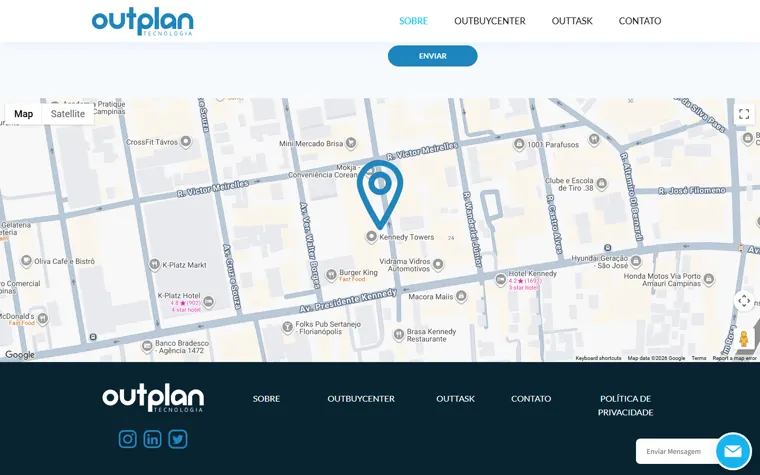

Uma marca mais humana para o setor de Compras.Identidade + site institucional para a Outplan.
Compras tem gente por trás.A marca ainda não mostra isso.
O site atual comunica com um mascote robô e ilustrações de banco de imagem — o padrão de qualquer SaaS genérico. Mas o que os clientes da Outplan descrevem em depoimentos é proximidade: "verdadeiros parceiros", não só um fornecedor de software.
O site atual cumpre o papel — mas comunica frio.
O site atual organiza bem o portfólio, e a estrutura institucional cumpre seu papel. O que falta é calor humano na forma como isso é mostrado.



Quatro pontos que abrem espaço para evoluir.
Onde a mudança acontece.
Tom mais humano, sem perder o B2B
Fim do mascote genérico: fotografia real que aproxima, sem infantilizar.
Portfólio com hierarquia clara
Outplan como holding, com OutBuyCenter e OutTask bem posicionados.
Identidade repaginada
Símbolo e paleta evoluem para carregar o conceito de conexão.
Mais controle, menos dependência
HTML/CSS/JS sem dependência de plugins.
Cada card, um contato real.
Comprar é falar com gente — cotar, negociar, aprovar. O site visualiza essa rede: fotografia real, nunca ilustração genérica.
- Fotografia real de pessoas — nunca ilustração ou mascote
- Cards conectados, como uma rede de contatos
- Blocos de cor dando estrutura, não gradiente genérico
- Hierarquia clara: Outplan → OutBuyCenter + OutTask
Um símbolo para a rede de contatos.
Não é começar do zero — é repaginar o que existe para que o símbolo carregue o conceito de conexão.
- Wordmark refinado, mantendo reconhecimento
- Símbolo explora motivo de nó/rede — abstrato, não literal
- Paleta: azul institucional + tom humano de apoio
- Sistema aplicável à holding e aos dois produtos
Site institucional repaginado.
Redesign completo do site da Outplan, com o portfólio organizado com clareza e prova social em destaque.
O que está incluso
- Redesign visual completo do site institucional
- Estrutura: Home · Sobre · OutBuyCenter · OutTask · Clientes · Contato
- Implementação responsiva em HTML/CSS/JS próprios
- Seção de prova social com depoimentos de clientes
- Formulário de contato integrado
- SEO técnico inicial
- Publicação final no domínio atual
Identidade visual repaginada.
Evolução do símbolo e da paleta atuais para uma marca com mais presença humana.
O que está incluso
- Repaginação do símbolo/wordmark atual
- Nova paleta de cores (institucional + tom humano de apoio)
- Tipografia primária e secundária
- Aplicação para a holding e os dois produtos
- Mini manual de marca em PDF
- Arquivos editáveis e abertos
Investimento.
- Tudo do site institucional
- Tudo da identidade visual
- Direção única para marca e site
- Mini manual de aplicação da marca
- Cronograma integrado entre as duas entregas
- Redesign completo
- Conceito de conexão aplicado
- Portfólio organizado
- SEO técnico
- Símbolo com motivo de conexão
- Paleta institucional + tom humano
- Aplicação holding + produtos
Da assinatura ao site no ar, em quatro etapas.
Assinatura do contrato
Formalização do escopo, prazos e condições.
Confirmação de pagamento
Primeira parcela libera o início dos trabalhos.
Briefing e conteúdo
Coleta de textos, depoimentos, materiais e direção de marca.
Execução e entrega
Design, desenvolvimento, revisão e publicação final.
Espaço para crescer quando fizer sentido.
O valor considera um projeto de repaginação objetivo. Novas frentes podem ser orçadas separadamente.
Uma marca que parece tão próximaquanto o atendimento que a Outplan já entrega.
Repaginar identidade e site não é recomeçar — é fazer a marca finalmente parecer com os 20 anos de proximidade que a Outplan já construiu com quem compra.